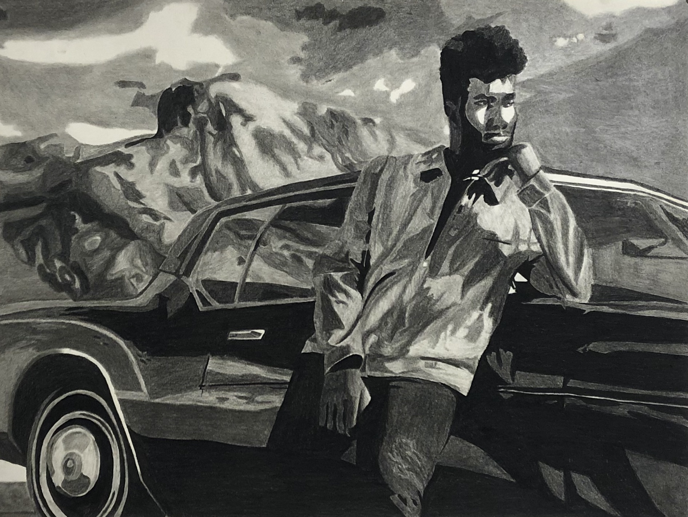
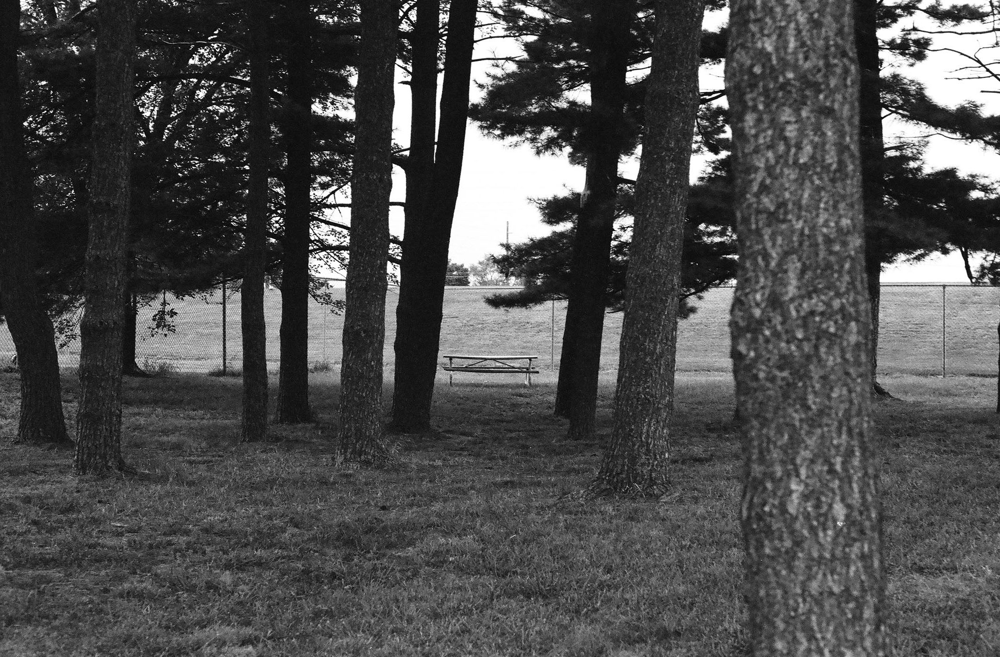
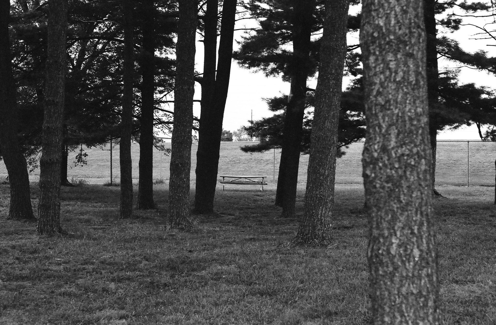

my portfolio.
This is my portfolio page showcasing some of my favorite pieces from the courses I’ve taken at Illinois State. First, are a few pieces I made in my first Studio/Fine Art courses my Sophomore year. In these courses I explored many different mediums from 2-D charcoal drawings, to 3-D cardboard sculptures.
I also included photos from one of my courses this semester where I explored shooting film photography, and techniques in “camera-less” photography. In this photography course I learned about different forms of photography created only by using chemistry, sun exposure and a darkroom.
Take a scroll, if you are so bold, and message me with any thoughts you have on my work!
charcoal drawings.



pastel drawings.

mixed mediums.
3-D sculpture.
pentax photography.

 



lumen prints.


photograms.


cyanotypes.